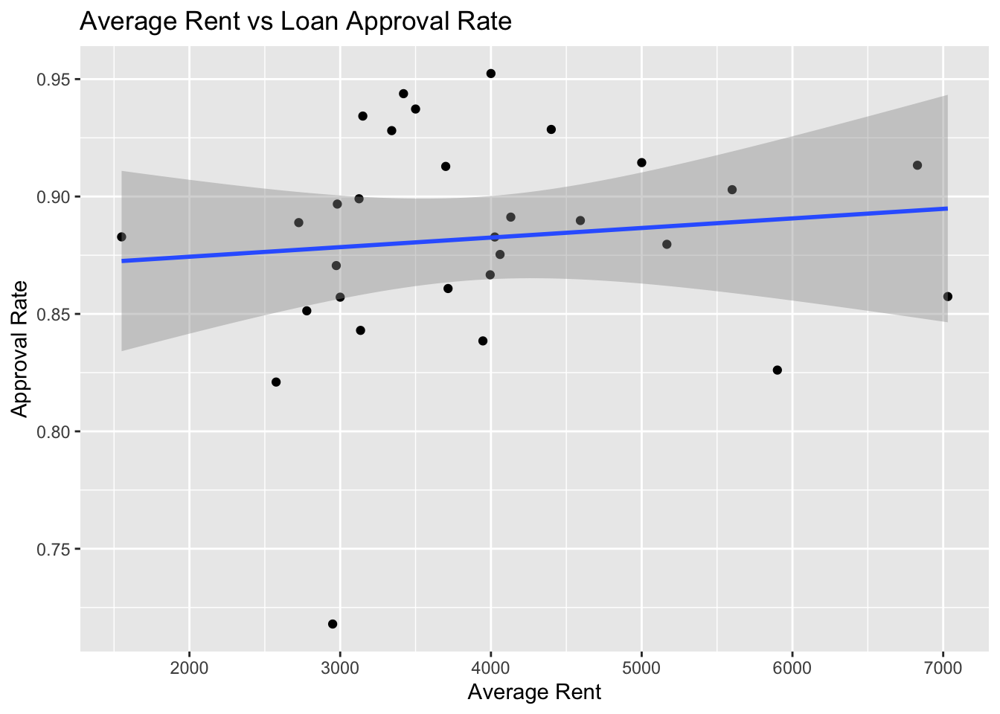
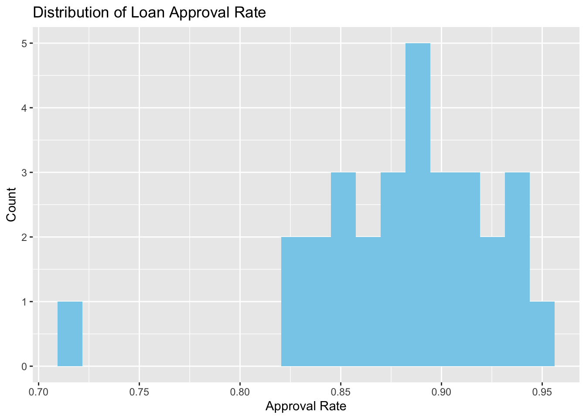

Analysis of the Relationship between Loan Availability and Local Rent
Main Objective
It analyzes how high rents in certain areas affect loan approval rates and insolvency rates to provide insights into financial-real estate linkage risks and financial product design.
Packages Used In This Analysis
# Data Wranglinglibrary(tidyverse)
Warning: package 'purrr' was built under R version 4.3.3
Warning: package 'lubridate' was built under R version 4.3.3
── Attaching core tidyverse packages ──────────────────────── tidyverse 2.0.0 ──
✔ dplyr 1.1.4 ✔ readr 2.1.5
✔ forcats 1.0.0 ✔ stringr 1.5.1
✔ ggplot2 3.5.1 ✔ tibble 3.2.1
✔ lubridate 1.9.4 ✔ tidyr 1.3.1
✔ purrr 1.0.4
── Conflicts ────────────────────────────────────────── tidyverse_conflicts() ──
✖ dplyr::filter() masks stats::filter()
✖ dplyr::lag() masks stats::lag()
ℹ Use the conflicted package (<http://conflicted.r-lib.org/>) to force all conflicts to become errors
library(readr) library(janitor)
Warning: package 'janitor' was built under R version 4.3.3
Attaching package: 'janitor'
The following objects are masked from 'package:stats':
chisq.test, fisher.test
library(lubridate) # Exploratory Data Analysislibrary(ggplot2) library(corrplot)
Warning: package 'corrplot' was built under R version 4.3.3
corrplot 0.95 loaded
library(reshape2)
Attaching package: 'reshape2'
The following object is masked from 'package:tidyr':
smiths
library(skimr) # Model Predictionlibrary(caret)
Warning: package 'caret' was built under R version 4.3.3
Loading required package: lattice
Attaching package: 'caret'
The following object is masked from 'package:purrr':
lift
library(glmnet)
Warning: package 'glmnet' was built under R version 4.3.3
Loading required package: Matrix
Attaching package: 'Matrix'
The following objects are masked from 'package:tidyr':
expand, pack, unpack
Loaded glmnet 4.1-8
library(randomForest)
Warning: package 'randomForest' was built under R version 4.3.3
randomForest 4.7-1.2
Type rfNews() to see new features/changes/bug fixes.
Attaching package: 'randomForest'
The following object is masked from 'package:dplyr':
combine
The following object is masked from 'package:ggplot2':
margin
Used Data
For this project, I will use three main data files:
loans_OC.csv: Contains loan data from Orange County.
SoCalRent1.csv and SoCalRent2.csv: Contain rental data from Southern California, including various regions.
These datasets will be combined and analyzed to explore the relationship between regional rental prices and loan approval outcomes.
Rows: 24472 Columns: 18
── Column specification ────────────────────────────────────────────────────────
Delimiter: ","
chr (8): institution, census_tract, ethnicity, race, sex, residency_type, ci...
dbl (9): loan_amount, property_value, interest_rate, total_loan_costs, incom...
lgl (1): applicant_over_62
ℹ Use `spec()` to retrieve the full column specification for this data.
ℹ Specify the column types or set `show_col_types = FALSE` to quiet this message.
Rows: 183 Columns: 7
── Column specification ────────────────────────────────────────────────────────
Delimiter: ","
chr (3): City, Type, Location
dbl (4): Price, Beds, Baths, SqFt
ℹ Use `spec()` to retrieve the full column specification for this data.
ℹ Specify the column types or set `show_col_types = FALSE` to quiet this message.
Rows: 117 Columns: 7
── Column specification ────────────────────────────────────────────────────────
Delimiter: ","
chr (3): City, Type, Location
dbl (4): Price, Beds, Baths, SqFt
ℹ Use `spec()` to retrieve the full column specification for this data.
ℹ Specify the column types or set `show_col_types = FALSE` to quiet this message.
When looking at the data, there were missing values, so it was imputed and processed up to outliers.
Removes any row in loans or rent where 50% or more of the values are missing. Rows with too many missing values may not be useful for analysis, and imputing them could introduce bias or noise. It is safer to drop them before further processing.
# A tibble: 1 × 7
city price beds baths sq_ft type location
<int> <int> <int> <int> <int> <int> <int>
1 0 0 0 0 0 0 0
Missing values for non-dimensional variables such as census_tract were not imputed. In addition, since the analysis does not use the variable for modeling or calculation, we decided that it doesn’t matter if there are missing values.
This code transforms two separate datasets (loan and rent) into aggregated city-level summaries and merges them into a single dataset. This merged dataset is ready for exploratory data analysis (EDA) and modeling to study the relationship between loan approval rates and rental market factors across cities.
These three visualizations work together to provide: - A matrix view of correlations between key variables. - A focused scatter plot for the relationship of rent vs approval rate. - A summary of the approval rate distribution across the dataset.
👉 They support exploratory data analysis (EDA) by uncovering patterns and potential relationships before modeling.
# Scatter plot: Average rent vs approval rateggplot(combined, aes(x = avg_rent, y = approval_rate)) +geom_point() +geom_smooth(method ="lm") +labs(title ="Average Rent vs Loan Approval Rate",x ="Average Rent",y ="Approval Rate")
`geom_smooth()` using formula = 'y ~ x'

# 3. Distribution of approval_rateggplot(combined, aes(x = approval_rate)) +geom_histogram(bins =20, fill ="skyblue") +labs(title ="Distribution of Loan Approval Rate", x ="Approval Rate", y ="Count")

👉 From these results, it appears that the loan approval rate is relatively high across most cities and shows weak correlation with average rent, average income, and property size. However, strong multicollinearity is observed among the predictor variables.
👉 Given these findings, I plan to proceed with regression modeling to formally test the statistical significance and predictive power of average rent, income, and loan amount on the approval rate, despite the low correlations observed.
👉 I also intend to explore alternative models such as regularized regression (LASSO) to address multicollinearity and assess variable importance, and non-linear models (e.g., random forest) to capture any non-linear effects that may not be visible in the scatter plot.
The exploratory data analysis shows weak correlations between loan approval rate and predictors such as average rent and income, while strong correlations are present among the predictors themselves. Therefore, we plan to use linear regression, LASSO, and random forest models to further investigate the relationship. Perhaps the predictive performance of the random forest model, which is less affected by multicollinearity, is expected to be the best.
Predictive Modeling
# Select key variablesmodel_data <- combined %>%select(approval_rate, avg_rent, avg_income, avg_sqft) %>%na.omit() # remove missing values# Split into training (80%) and testing (20%) setsset.seed(123)train_index <-createDataPartition(model_data$approval_rate, p =0.8, list =FALSE)train_data <- model_data[train_index, ]test_data <- model_data[-train_index, ]
# Set up cross-validationtrain_control <-trainControl(method ="cv",number =5,summaryFunction = defaultSummary)
The variable that most influenced the prediction was identified as avg_income.
# Example: Suppose Random Forest is the best modelfinal_model <- rf_model# Save the model to an .rds filesaveRDS(final_model, file ="final_model_rf.rds")
Load the saved model later
# Load the model from the .rds fileloaded_model <-readRDS("final_model_rf.rds")# Use the loaded model for predictionspredictions <-predict(loaded_model, newdata = test_data)# Check performance on the test setloaded_model_perf <-postResample(pred = predictions, obs = test_data$approval_rate)print(loaded_model_perf)
RMSE Rsquared MAE
0.03237814 0.48973833 0.02419465
Saving the model allows you to reuse it later without retraining, which saves time and ensures reproducibility. You can reload a previously saved model for prediction or further analysis in a new R session.
Significance of the Project
This project integrates loan data and rental market data at the city level to explore potential relationships between loan approval rates and local housing characteristics.By combining and analyzing these datasets, we aim to uncover patterns that may not be visible from loan data or rental data alone.
Through data cleaning, transformation, exploratory data analysis (EDA), and predictive modeling, the project demonstrates a complete data science pipeline from raw data to actionable insights.
Key Insights & Breaking points
It was discovered that average income was the predictor that had the greatest impact on the loan approval rate.
However, it was difficult to maximize the model’s performance due to the small number of variables and data, suggesting that additional factors such as credit scores and debt ratios were needed. In addition, if the multicollinearity problem, which reveals a strong correlation between predictors, has been solved, better performance can be expected in the linear regression model.